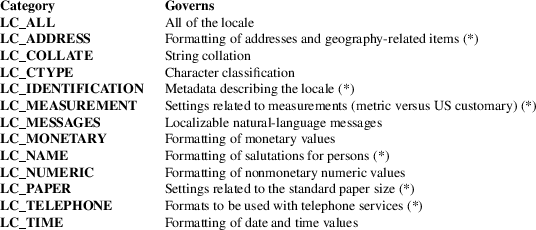
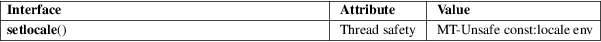

setlocale − set the current locale
Standard C library (libc, −lc)
#include <locale.h>
char *setlocale(int category, const char *locale);
The setlocale() function is used to set or query the program’s current locale.
If locale is not NULL, the program’s current locale is modified according to the arguments. The argument category determines which parts of the program’s current locale should be modified.

The categories marked with an asterisk in the above table are GNU extensions. For further information on these locale categories, see locale(7).
The argument locale is a pointer to a character string containing the required setting of category. Such a string is either a well-known constant like "C" or "da_DK" (see below), or an opaque string that was returned by another call of setlocale().
If locale is an empty string, "", each part of the locale that should be modified is set according to the environment variables. The details are implementation-dependent. For glibc, first (regardless of category), the environment variable LC_ALL is inspected, next the environment variable with the same name as the category (see the table above), and finally the environment variable LANG. The first existing environment variable is used. If its value is not a valid locale specification, the locale is unchanged, and setlocale() returns NULL.
The locale "C" or "POSIX" is a portable locale; it exists on all conforming systems.
A locale name is typically of the form language[_territory][.codeset][@modifier], where language is an ISO 639 language code, territory is an ISO 3166 country code, and codeset is a character set or encoding identifier like ISO−8859−1 or UTF−8. For a list of all supported locales, try "locale −a" (see locale(1)).
If locale is NULL, the current locale is only queried, not modified.
On startup of the main program, the portable "C" locale is selected as default. A program may be made portable to all locales by calling:
setlocale(LC_ALL, "");
after program initialization, and then:
|
• |
using the values returned from a localeconv(3) call for locale-dependent information; | ||
|
• |
using the multibyte and wide character functions for text processing if MB_CUR_MAX > 1; | ||
|
• |
using strcoll(3) and strxfrm(3) to compare strings; and | ||
|
• |
using wcscoll(3) and wcsxfrm(3) to compare wide-character strings. |
A successful call to setlocale() returns an opaque string that corresponds to the locale set. This string may be allocated in static storage. The string returned is such that a subsequent call with that string and its associated category will restore that part of the process’s locale. The return value is NULL if the request cannot be honored.
For an explanation of the terms used in this section, see attributes(7).

C11, POSIX.1-2008.
Categories
|
LC_ALL |
LC_COLLATE
LC_CTYPE
LC_MONETARY
LC_NUMERIC
LC_TIME
C11, POSIX.1-2008.
LC_MESSAGES
POSIX.1-2008.
Others:
GNU.
POSIX.1-2001, C89.
Categories
|
LC_ALL |
LC_COLLATE
LC_CTYPE
LC_MONETARY
LC_NUMERIC
LC_TIME
C89, POSIX.1-2001.
LC_MESSAGES
POSIX.1-2001.
Others:
GNU.
locale(1), localedef(1), isalpha(3), localeconv(3), nl_langinfo(3), rpmatch(3), strcoll(3), strftime(3), charsets(7), locale(7)